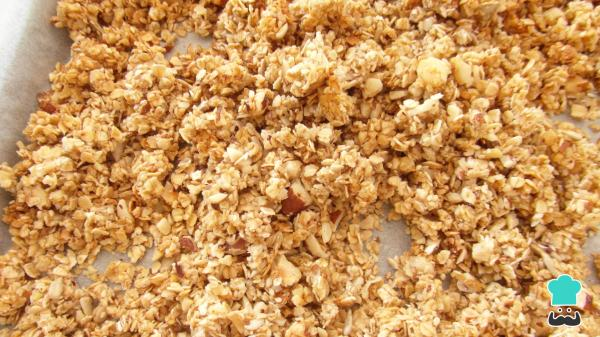

Granola saudável

Hoje em dia procuramos tornar nossas refeições cada vez mais saudáveis, e o café da manhã não deve ficar de fora!
Ingredientes para a montagem:
- 200 gramas de flocos de aveia
- 150 gramas de mix de frutos secos
- 4 colheres de sopa de sementes de girassol
- 4 colheres de sopa de sementes de sésamo
- 4 colheres de sopa de mel
- 3 colheres de sopa de óleo de coco
Modo de Fazer:
- Para preparar esta receita de granola saudável o primeiro passo é reunir os ingredientes necessários. Neste caso optei por usar um mix de frutos de casca dura: amêndoa, avelã, castanha-do-pará, noz e macadâmia.
- Se, tal como eu, não estiver usando frutos secos moídos, pode batê-los um pouco no liquidificador ou processador, de forma a ficarem em pedaços..
- O passo seguinte desta granola caseira é misturar todos os ingredientes secos numa tigela.
- Acrescente o óleo de coco e o mel, que são gorduras e adoçantes naturais e saudáveis, e misture muito bem, até ficar granulado.
- Transfira essa mistura de granola para um tabuleiro de forno forrado com papel manteiga, e leve a assar no forno preaquecido a 180ºC por cerca de 20 minutos, ou até dourar.
- Após o tempo indicado, sua granola saudável está pronta! Deixe esfriar, desgrude com uma colher e consuma como substituto de outros cereais, por exemplo, com leite e iogurtes. Bom apetite!